Se realizan ponencias, talleres donde se presentan temas locales, nacionales y latinoamericanos, relacionados al Software Libre
Habana Espacios Creativos
Teniente Rey #41 esquina Habana, Habana Vieja,
La Habana, Cuba
Aprovechando el marco del evento, puede traer su Laptop/Portatil y le ayudaremos a instalar GNU/Linux
¿Cuándo y dónde?
Sábado 23 de abril de 2022 en Habana Espacios Creativos, cita en calle Teniente Rey #41 esquina Habana, Habana Vieja.
1
er Piso
Hora: 9:00 am
¿Cómo puedo participar en el Flisol? ¿Debo pagar algo?
FLISOL es un evento con entrada GRATUITA y LIBRE, abierto a la participación de todas las comunidades, empresas y personas interesadas en brindar, promover o conocer el Software
Libre y su filosofía. Es organizado de manera voluntaria y en su mayoría con recursos propios de la comunidad GUTL, por lo que cualquier contribución, colaboración o ayuda, siempre es bienvenida, incluso el simple hecho de brindarse
como voluntario en la organización del evento. ¡También su presencia como simple espectador es bienvenida! Hay muchas maneras de participar en el FLISOL, usted puede venir y participar como asistente, traer su computadora para que
le instalen software libre. También puede presentar conferencias, impartir talleres, exponer productos, ofrecerse como voluntario en su organización y planificación, brindar alguna contribución. Si esta interesado en participar de
alguna de estas maneras, envíe un correo a la siguiente dirección electrónica: ponencias@flisolhabana.org, poniendo como asunto Flisol 2022 y los datos correspondientes dependiendo del caso. La fecha tope para su envío es el 10 de
abril de 2022.
También puede registrarse aquí.
Conferencias:
Largas: 45 minutos para charla + 15 de debate (60 minutos) Medias: 10 minutos para charla + 5 de debate (15 minutos) Enviar: Título, un resumen de la conferencia, nombre de autor(es) e institución o comunidad a la
que pertenezca en un archivo odt o pdf.
Espacio para exposición:
Enviar: Institución o comunidad a la que pertenece, información de lo que desea exponer, en el caso de póster, enviar previamente el póster con tamaño de imagen no superior a los 500 kb en un archivo odt
o pdf en el caso de la información.
Taller:
Enviar: Título, un resumen del taller, nombre de instructores(es) e institución o comunidad a la que pertenezca en un archivo odt o pdf.
¿Que actividades se realizarán en el FLISOL?
Durante la celebración se impartirán conferencias, se intercambiarán experiencias, se presentarán productos y logros relacionados con el empuje del Software Libre en la isla… A su vez,
los interesados podrán instalar Software Libre en sus computadoras personales, asesorados por personal del GUTL y miembros de otras comunidades.
¿Qué ocurre después del FLISOL? ¿Se termina todo?
Siempre se documenta todo lo ocurrido, especialmente las conferencias, y se publica en el sitio nacional de la comunidad. No necesita acceso a Internet para visitarlo. Por cierto,
allí hay una enorme riqueza de conocimiento, tutoriales, know-hows y sugerencias que usted puede aprovechar. Si necesita descargar software libre, ¡puede hacerlo desde allí también! Se aprovecha todo esto para promover la creación
de una asociación nacional para la defensa del conocimiento libre en Cuba que permita institucionalizar el esfuerzo voluntario de la comunidad nacional radicada en el GUTL. A través de la página del GUTL anteriormente citada, seguiremos
orientando a aquellas personas que ya usan o desean usar Software Libre sobre los lugares a los cuales pueden dirigirse y encontrar discos de instalación, documentación, asesoría, así como los repositorios actualizados.
Maikel formó parte de la familia GUTL desde el 6 diciembre de 2011. Fue fiel a GNU/Linux y las filosofías del Software Libre y el Código Abierto. Creador del Proyecto SWL-X, también se dedicó al Desarrollo, Diseño Web y Marketing Online. Asimismo, fue creador de Web & Media Integrated Solutions. Proyectos como Videomorph y más recientemente, el convertidor de videos MystiQ, son parte de su legado.
Desde sus inicios en el blog Cubava, Maikel creó y formó parte del proyecto de SWL-X, el cual defendió siempre en la revista digital y la comunidad en Telegram que lo acompañaba. Participó como miembro activo del grupo que desarrolló Covid19 Cuba Data (Postdata, Jt, Matcom, Universidad de Oriente, proyecto Cosubu).
Durante varios años hizo lo imposible porque en su ciudad natal se realizara el FLISOL cada año. Muchas veces solo, incansable y fiel a sus principios. Hasta la fecha de su lamentable fallecimiento, mantenia un Podcast junto a otros colaboradores de la comunidad, para instruir a nuevos desarrolladores en el mundo del software libre.

La fecha de registro para los expositores ya fue cerrada (debajo el programa del evento), los invitamos a que venga y participé. Recuerde participar es completamente gratis.
Breves palabras por parte del comite organizador del FLISoL en la Habana.
Pavel Milanes Costa nos presentará: MailAD, una cómoda herramienta para desplegar un server de correos en Linux, vinculado a un Directorio Activo.
Anatoli J Fornet Petrov del taller Blacklab-Game, nos presentará: KiCad para el diseño de circuitos electrónicos.
Joaquín Pina, Presidente de la UIC en La Habana, nos presentará: Fomento de la industria cubana de software para impulsar el proceso de transformación digital hacia una Ciudad (Habana) inteligente.
Charla por parte de Jon Maddog Hall, presidente del consejo de Linux Professional Institute.
Alexis López Zubieta nos presentará: Appimage como tecnología de empaquetado de aplicaciones para GNU/Linux.
Omar Correa Madrigal, Vicepresidente de la UIC nos presentará: Filosofía Open en las Tecnologías de la Información y las Comunicaciones.
Entrega de premios a los ganadores del Global Game Jam, realizados en el mes de Enero de 2022 en varias sedes del país.
Pablo Mestre Drake nos presentará: Mystiq. El legado de Maikel Llamaret. Llamado a rescatar el proyecto Mystiq, uno de los mayores proyectos que llevo adelante Maikel Llamaret.
Presentada por: Carlos Raúl Laguna Mendoza del Joven Club de Computación y Electrónica.
Avangenio nos presentará: Desarrollo de sistema automatizado de cobro de pasaje y sistema de seguimiento de paquetería usando una plataforma flexible de computación distribuida.
Pablo Mestre Drake nos presentará: Manteniendo paquetes Python en Debian GNU/Linux Mi experiencia personal. Mostrar el proceso de empaquetado de un proyecto python para Debian.
Relanzamiento de la distribución cubana de GNU/Linux, Nova en su versión 8.
Matias Vara Larsen de Argentina, nos presentará: Projecto ToroOS y del projecto Toro Unikernel. El primero es un Sistema Operativo escrito en Pascal desde cero. El segundo es un Unikernel.